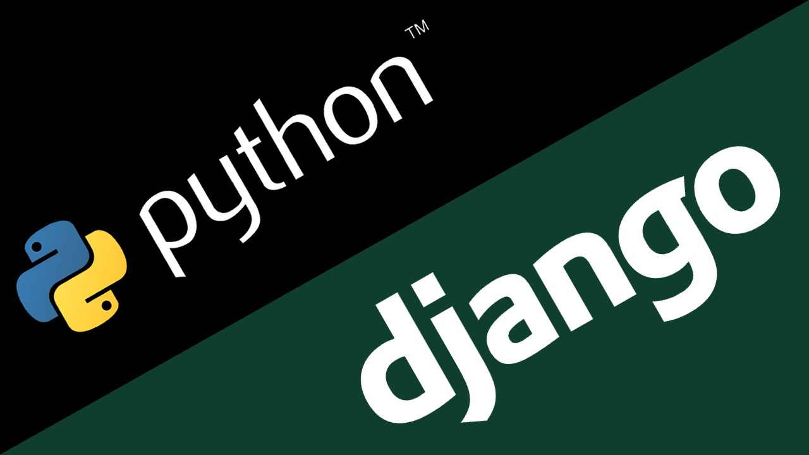

Netfix

Overview
Netfix is a service marketplace platform built with Django and Python. The premise: tradespeople and service companies register on the platform, list their services by category (plumbing, carpentry, painting, electrical work, and others), and customers browse, request, and track those services. Think of it as a lightweight Angi or Thumbtack — a two-sided marketplace with distinct user types, separate registration flows, and different capabilities on each side.
I built it as my intentional introduction to Python and Django — deliberately choosing a batteries-included framework after having built web backends from scratch in Go, so I could compare the experience and understand what the framework was doing for me.
Django After Go: A Deliberate Contrast
Coming to Django after writing raw net/http handlers in Go was a genuinely
illuminating experience. In Go, every piece of middleware, every route, every database query
is explicit. In Django, an enormous amount happens automatically: the ORM translates Python
objects to SQL, the admin panel generates itself from your models, form validation runs in
the framework before your view code even executes.
The trade-off is transparency. Django's magic is powerful when you understand what's underneath it — and confusing when you don't. Having already built the same primitives by hand, I could read a Django view and understand exactly what the framework was abstracting at each line. That made me a faster Django developer from day one, and a better one when things went wrong.
Architecture: Three Apps, Two User Types
The project is structured as three Django applications: users handles authentication,
registration, and profiles for both user types; services handles the marketplace
logic — service listings, categories, and service requests; main holds shared
templates and utilities used across both.
The two-user-type model — Company and Customer — was the most interesting design challenge. Both types share a base user model for authentication, but have different profile data, different views available to them, and different permissions throughout the app. Companies create and manage service listings; customers browse and submit requests. Each type has its own registration form and profile page.
Business Logic at the Model Layer
The most technically interesting constraint in the spec was the field-of-work restriction: a company can only offer services within its declared trade category, unless it registered as an "All in One" company, in which case it can offer any category. Simple enough in prose — genuinely fiddly to enforce correctly in code.
I pushed this validation down to the model layer rather than scattering it across views.
Django's model clean() method runs before every save, so the constraint is
enforced regardless of which view or form triggers the operation. This is the right place
for business rules that must hold as invariants across the entire application —
not in a view that might be bypassed by a direct model save elsewhere.
Relational Data Modelling
The data model has several interesting relationships. A service belongs to a company and has a category. A service request belongs to a customer and references a specific service, creating a three-way relationship that needs to track status (pending, accepted, completed), timestamps, and eventually a cost calculation. The "most requested" ranking requires aggregating request counts per service efficiently.
Learning to use Django's ORM annotation and aggregation API properly made a significant
difference here. A naïve implementation that fetches all requests and counts them in Python
produces an N+1 query problem that becomes visible with any meaningful amount of data.
Using annotate(Count('requests')) and sorting in the database keeps it to a
single query regardless of scale.
Challenges
Permission enforcement was the most persistent source of bugs. Django's built-in permission system handles basic cases well, but the Company/Customer distinction required custom decorator logic: certain views must be unreachable by companies, others by customers, and the error responses need to be informative rather than generic 403s. Getting every access path covered — including the Django admin, direct URL access, and form submissions — required systematic testing of each protected endpoint with each user type.
Template inheritance was another area that required discipline. Django's template system is powerful but verbose, and it's easy to duplicate logic across templates that should share a base. I refactored the template tree twice to eliminate repetition — once for the overall page structure, and once for the service card component that appears in multiple views.
What I Took Away
Netfix gave me a solid foundation in Python and Django, and a clear-eyed view of the trade-offs between framework-heavy and framework-light development. Frameworks accelerate the parts they're designed for and add friction everywhere else. Knowing when to lean on Django and when to work around it — and understanding the underlying mechanics well enough to make that call confidently — is the real skill. This project gave me that, and a genuine appreciation for Python as a language along the way.